class: center, middle ### EÜAŞ - ODTÜ Elektrik EGEN Generatör Tasarımı ve İmalatı Projesi # Elektrik Makina Tasarımı Temelleri ## Ozan Keysan [keysan.me](http://keysan.me) Office: C-113 <span class="meta">•</span> Tel: 210 7586 --- ### Bir elektrik makinası tasarlarken neleri bilmek gerekir? -- - ### Motor/Generatör türü ve kullanım amacı -- - ### Anma Gücü / Gerilim Seviyesi -- - ### Anma Hızı -- - ### Anma frekansı/Faz Sayısı -- - ### Çalışma Döngüsü -- - ### Çalışma Ortamı/Mekanik Kısıtlar -- - ### Ekonomik Limitler/Verim/Ömür Beklentisi --- # Frame Sizes <img src="./images/ee564/frame_size.jpg" alt="Drawing" style="width: 750px;"> [More info](http://www.motology.co.th/download/motors/%282%29%20Standard%20Motor%20catalog.pdf) --- <img src="./images/ee564/frame_size2.jpg" alt="Drawing" style="width: 500px;"> --- # Tasarım Prosedürü -- - ## Manyetik ve Elektrik Yüklenme Değerlerinin Belirlenmesi -- - ## Rotor Çapı ve Eksenel Uzunluğunun Belirlenmesi -- - ## Hava aralığının belirlenmesi -- - ## Sargı türü, bobin tur sayısı vb. belirlenmesi --- # Tasarım Prosedürü - ## Ankuş, diş kalınlık, nüve malzeme vb. parametrelerin belirlenmesi -- - ## Makine performans değerlerinin (verim, ağırlık, maliyet) hesaplanması -- - ## Birçok iterasyonla optimum tasarıma ulaşılması --- # Elektrik makinalarında tork nasıl üretilir? --- # Lorenz Kuvveti ## \\(\vec{F} = q \vec{v} \times \vec{B}\\) -- ### veya kuvvet yoğunluğu cinsinden (\\(N/m^3\\))): ## \\(\vec{f} = \rho \vec{v} \times \vec{B} = \vec{J} \times \vec{B}\\) #### \\( \rho \\): Şarj yoğunluğu (C/m3) , \\( \vec{v} \\): hız --- # Lorenz Kuvveti ## \\(\vec{F} = \vec{J} \times \vec{B}\\)  --- # Lorenz Kuvveti Uygulamaları - ### [Force Demo](http://www.youtube.com/watch?v=K9ks_DNPAFQ) - ### [Homopolar Motor](http://www.youtube.com/watch?v=kJKuNcgbW-o) - ### [Wolrd's Simplest Electric Train](https://www.youtube.com/watch?v=J9b0J29OzAU) - ### [Navy Railgun](https://www.youtube.com/watch?v=NmFeRYPNP88) - ### [Aselsan Tufan](https://www.youtube.com/watch?v=O5GtuQk3t44) - ### [Aselsan Tufan-2](https://www.youtube.com/watch?v=MxloiA5mSSk) --- # Hangi yöne döner? Nasıl hareket eder? 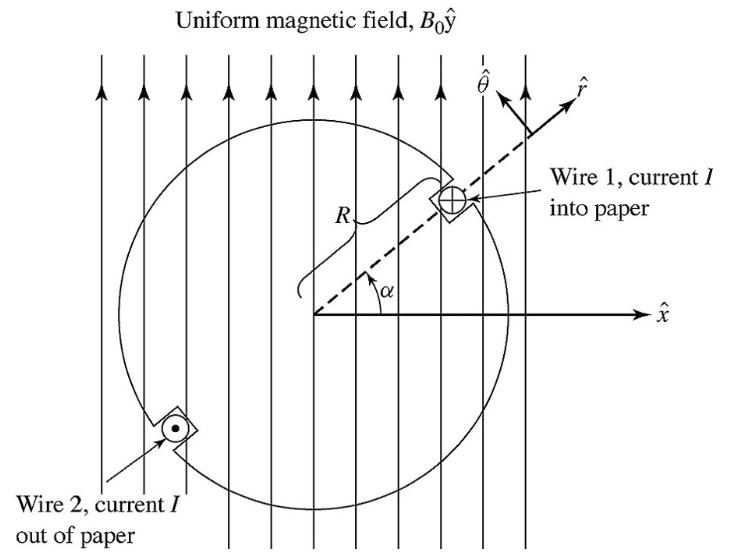 --- # Bu mekanizma nasıl hareket eder? 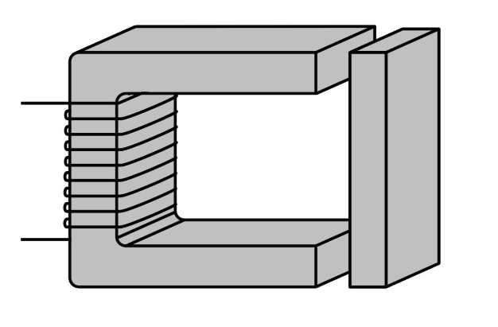 --- # Elektromekanik Sistemler 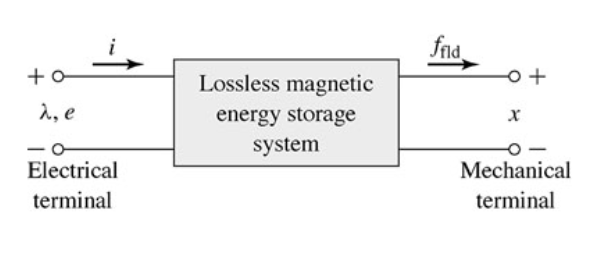 ### Kayıpsız bir sistemde: ### Elektrik Enerji Girdisi = Depolanan Manyetik Enerji + Mekanik İş --- # Elektromekanik Sistemler ### Elektrik Enerji Girdisi = Depolanan Manyetik Enerji + Mekanik İş ### \\(\Delta W\_{elec} = \Delta W\_{mag} + \Delta W\_{mech}\\) -- ### \\( Vi\, \mathrm{d}t = i \, \mathrm{d}\lambda = \Delta W\_{magnetic} + f_{mech} \, \mathrm{d}x\\) -- ## \\( \Delta W\_{magnetic} = i \, \mathrm{d}\lambda - f_{mech} \, \mathrm{d}x\\) --- # Depolanan Manyetik Enerji ## \\(W\_{stored} = \int_0^\lambda i(\lambda) d\lambda \\) -- ## veya B-H karakteristiğinden: ## \\(W\_{stored} = \int \_{volume } (\int_0^B H dB) \\) #### Lineer Sistemlerde: ## W(magnetic) = \\(\dfrac{1}{2} \lambda i = \dfrac{1}{2} L i^2 =\dfrac{1}{2L} \lambda^2 \\) --- # Singly-Excited Electromechanical System 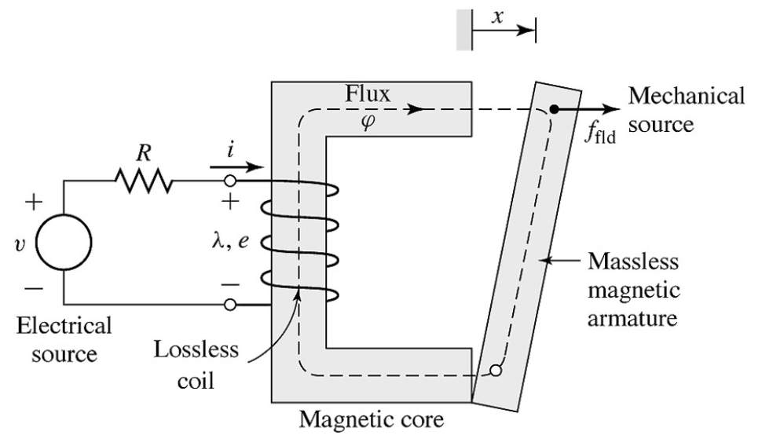 --- # Depolanan Enerjiden Kuvvet 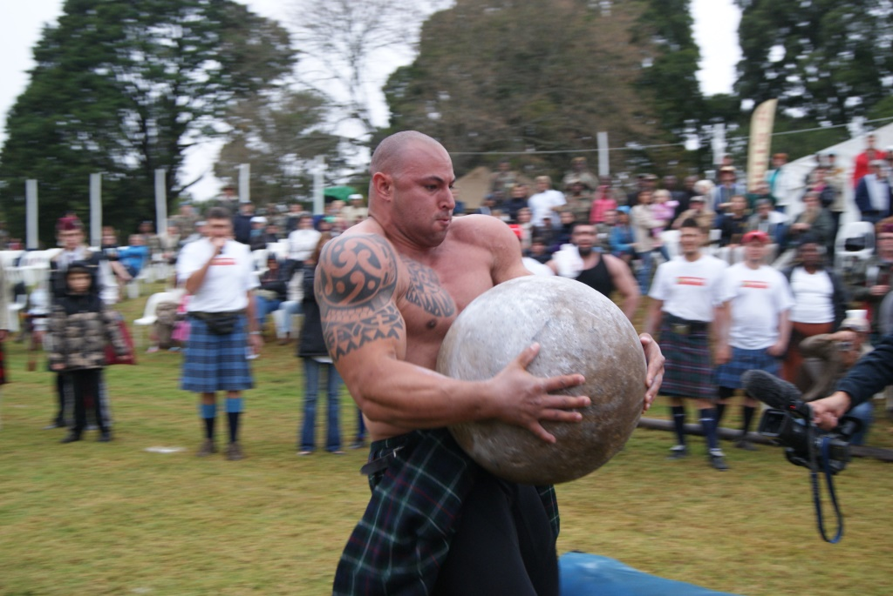 -- ## Enerjinin pozisyona göre türevi kuvveti verir --- # Depolanan Enerjiden Kuvvet ### \\(F = - \dfrac{\partial}{\partial x} (\dfrac{\lambda^2}{2 L(x)}) =\dfrac{ \lambda^2}{2 L(x)^2} (\dfrac{d L(x)}{dx}) \\) -- ### \\(F = \dfrac{i^2}{2} \dfrac{d L(x)}{dx} \\) --- # Elektromekanik Kuvvet ### Elektromekanik Sistemler: - ## Manyetik akı sabitken depolanan manyetik enerjiyi (\\(W\_{magnetic}\\)) azaltmaya, -- - ## Endüktansı arttırmaya -- - ## Relüktansı (\\(L=N^2/R\\)) azaltmaya çalışır! --- ## Mekanik Güç ve Enerji: ## Lineer Sistemler: -- ## \\(P = F v = F \dfrac{dx}{dt}\\) Watt ## \\(W = \int P dt = F x \\) Joule ## \\(F = m a = m \dfrac{dv}{dt}\\) --- ## Mekanik Güç ve Enerji: ## Dönel Sistemler: ### \\(P=T \omega = T \dfrac{d\theta}{dt} \\) Watt ### \\(W= \int P dt = T \theta \\) Joule ### \\(T=J \dfrac{d\omega}{dt} \\) Watt ### J: Rotational Inertia (\\(kgm^2\\)) --- # Bu sistemde hareket olur mu? 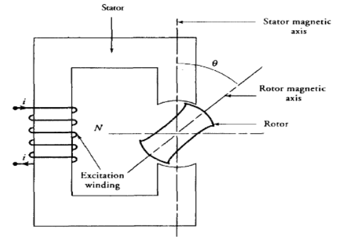 --- # Tork nasıl bulunur? --- # Dönel Sistemler: ## Manyetik enerjinin türevi pozisyona göre değil, açıya göre \\( \theta \\) alınır. -- ### \\(T = - \dfrac{1}{2}\Phi^2\dfrac{d R(\theta)}{d \theta} |\_{\Phi = constant}\\) ### \\(T = \dfrac{1}{2}I^2\dfrac{d L(\theta)}{d \theta} |\_{i = constant}\\) --- # Sürekli dönüş nasıl elde edilir? --- ## Tek faz relüktans motorlar <img src="./images/ee564/reluctance_motor.gif" alt="Drawing" style="width: 500px;"/> ### [Magnetorquer](https://blog.satsearch.co/2019-08-21-magnetorquers-an-overview-of-magnetic-torquer-products-available-on-the-global-marketplace-for-space.html) --- ## Tek faz relüktans motor 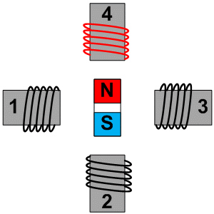 ### [Magnetic Flux](https://www.youtube.com/watch?v=hDJnLt7cBTY), [Micro-stepping for higher accuracy](https://www.youtube.com/watch?v=eyqwLiowZiU) --- ## Tek faz relüktans motor <img src="http://www.motioncontroltips.com/wp-content/uploads/2016/12/switched-reluctance-motor-with-iron-only-rotor-copy.jpg" alt="Drawing" style="width: 600px;"/> ### [Detaylı Bilgi](http://electrical-engineering-portal.com/characteristics-and-work-principles-of-switched-reluctance-sr-motor) --- # Relüktans Motorlar <img src="http://www.abb-conversations.com/wp-content/uploads/2012/11/ABB-IE4-Synchronous-Reluctance-Motor-SynRM.jpg" alt="Drawing" style="width: 700px;"/> -- - ### To maximize the inductance, to minimize the reluctance (\\(L=N^2/R\\)) - ### To decrease the magnetic energy (increase co-energy) ## Rotational systems are similar to linear systems, but take the derivative of magnetic energy in terms of \\(\theta\\) instead of \\(x\\). --- ### Bu sistemdeki tork nedir? ## Silindirik Rotor, Silindirik Stator 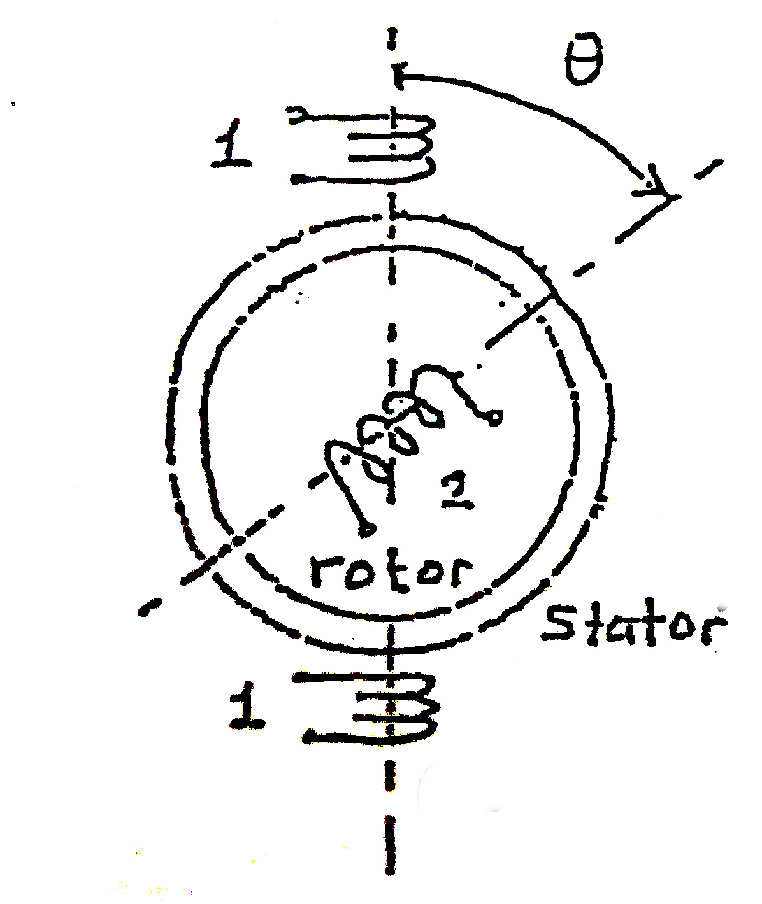 --- ### Bu sistemdeki tork nedir? ## Silindirik Rotor, Asimetrik Stator 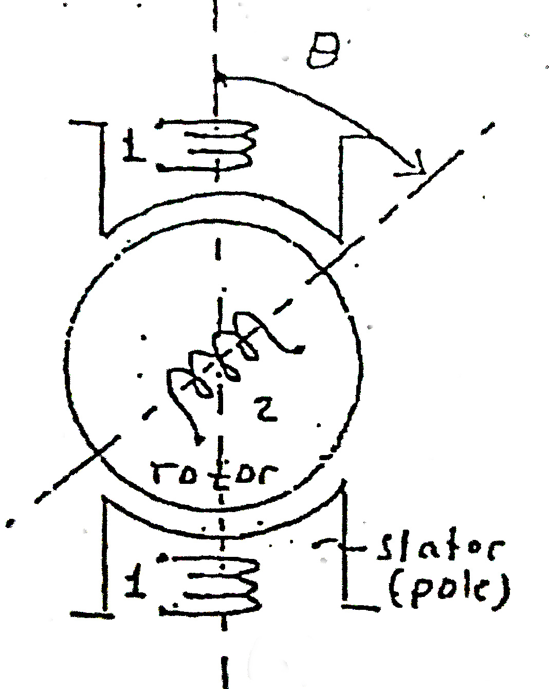 --- ### Bu sistemdeki tork nedir? ## Çıkık kutup rotor, Silindirik Stator 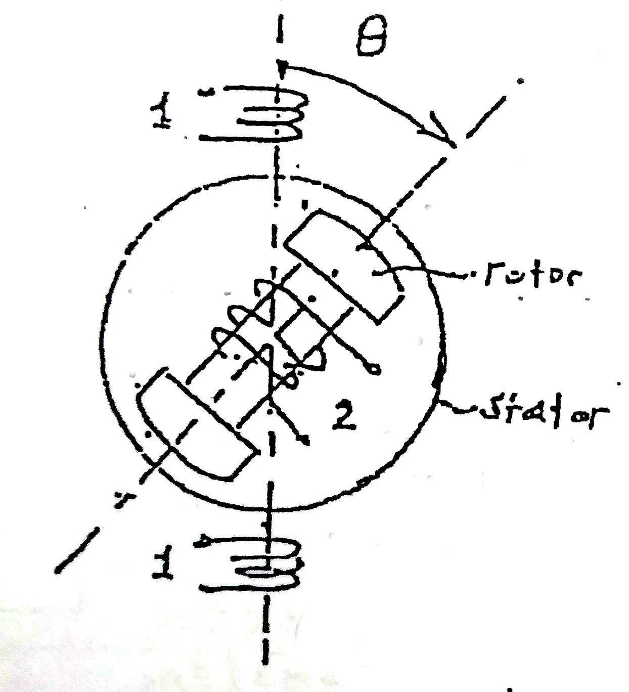 --- # Çoklu Uyartılı Sistemler ## Eğer iki bobin de uyarılırsa ne olur? 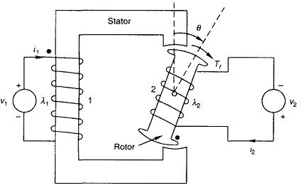 --- # Çoklu Uyartılı Sistemler 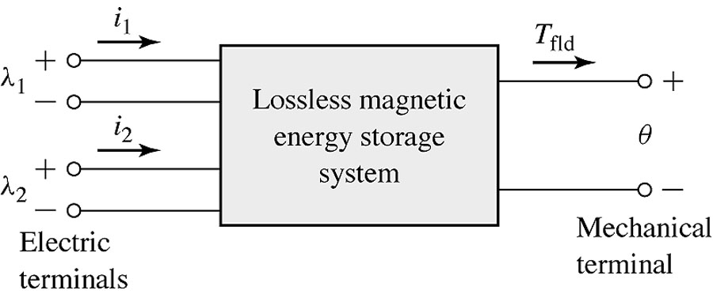 -- --- # Karşılıklı Endüktans <img src="https://www.electrical4u.com/images/february16/1456131982.gif" alt="Drawing" style="width: 600px;"/> --- # Karşılıklı Endüktans <img src="https://www.electrical4u.com/images/february16/1456131982.gif" alt="Drawing" style="width: 300px;"/> ## Toplam depolanan enerji: ## \\( W = \dfrac{1}{2} L\_{11}i\_1^2 + \dfrac{1}{2} L\_{22}i\_2^2 + M i\_1 i\_2\\) --- # Çoklu Sistemlerde Tork ## Hala manyetik enerjinin türevine bağlıdır -- ### \\(T\_{mech}= \dfrac{1}{2} \dfrac{dL\_{11}}{d\theta}i\_1^2 + \dfrac{1}{2} \dfrac{dL\_{22}}{d\theta}i\_2^2\\) ### \\(\quad\quad\quad + \dfrac{dM}{d\theta} i\_1 i\_2\\) ### [Contactless Surgery](https://www.youtube.com/watch?v=ocE3MjF77Wk) [More information](http://robohub.org/minimally-invasive-eye-surgery-on-the-horizon-as-magnetically-guided-microbots-move-toward-clinical-trials/) --- ## Silindirik Rotor, Silindirik Stator -- ### \\(T=i\_1 i\_2 \dfrac{\partial M}{\partial \theta}\\) : (\\(L\_{11}\\),\\(L\_{22}\\) sabit) --- ## Silindirik Rotor, Asimetrik Stator -- ### \\(T=\dfrac{1}{2}i\_2^2 \dfrac{\partial L\_{22}}{\partial \theta} + i\_1 i\_2 \dfrac{\partial M}{\partial \theta}\\) : (\\(L\_{11}\\) sabit) --- ## Çıkık Kutup Rotor, Silindirik Stator -- ### \\(T=\dfrac{1}{2}i\_1^2 \dfrac{\partial L\_{11}}{\partial \theta} + i\_1 i\_2 \dfrac{\partial M}{\partial \theta}\\) : (\\(L\_{22}\\) sabit) --- ## Çıkık Kutup Rotor, Silindirik Stator -- ### \\(T=\dfrac{1}{2}i\_1^2 \dfrac{\partial L\_{11}}{\partial \theta} + i\_1 i\_2 \dfrac{\partial M}{\partial \theta}\\) : (\\(L\_{22}\\) sabit) --- # Silindirik Rotor & Çıkık Kutup Rotor -- <img src="http://1.bp.blogspot.com/-abfAw-qVR6g/T9il-2u0-wI/AAAAAAAABo0/gg53eqWmfyg/s1600/stator.png" alt="Drawing" style="width: 600px;"/> ### Çıkık Kutup: Hava aralığı dolayısıyla relüktans pozisyona bağlıdır. --- # Çıkık Kutup Senktron Makineler <img src="https://www.linquip.com/blog/wp-content/uploads/2020/06/salient-pole-rotor.jpg" alt="Drawing" style="width: 600px;"/> ### Hava aralığı sabit değildir. ### Dolayısıyla hem senkron hem relüktans tork bileşenleri bulunur. --- ## Çıkık Kutup Makinelerde Tork 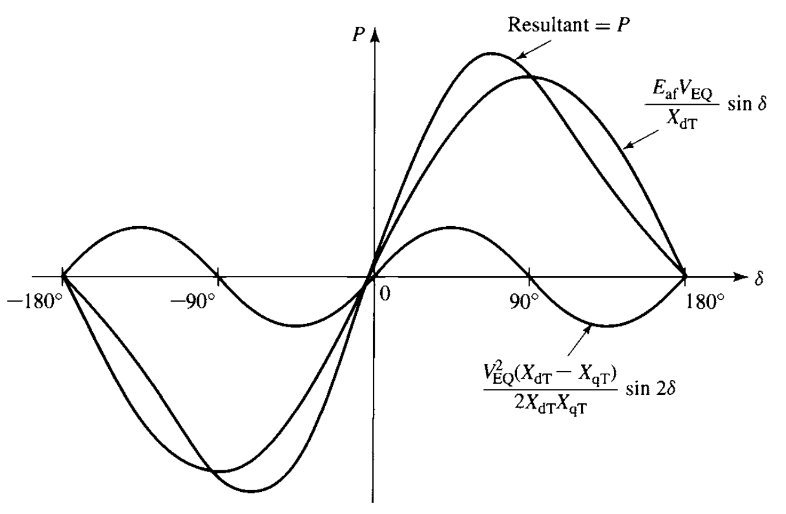 ### \\(T=\dfrac{1}{2}i\_1^2 \dfrac{\partial L\_{11}}{\partial \theta} + i\_1 i\_2 \dfrac{\partial M}{\partial \theta}\\) : (\\(L\_{22}\\) constant) --- # Elektrik makinalarında tork nerde üretilir? ## Rotor hangi yöne döner? -- <img src="./images/ee564/maxwell_tensor.png" alt="Drawing" style="width: 750px;"> --- ### Maxwell Stres Tensorü ## \\(\sigma_F = \dfrac{1}{2}\mu_0 H^2\\) veya ## \\(\sigma_F = \dfrac{1}{2\mu_0} B^2\\) --- # Rotorda Kayma Stresi (Shear Stress) -- ## Elektrik Makinaları için Ortalama Değerler - ### Endüstriyel Motorlar (<1 kW): 0.7 - 2 kPa - ### Endüstriyel Motorlar (>1 kW): 4 - 15 kPa - ### Yüksek Performans Endüstriyel Servo Motorlar: 10 - 20 kPa - ### Sıvı Soğutmalı Motorlar: 20 - 100 kPa [Detaylı bilgi](http://www.eleceng.adelaide.edu.au/research/power/pebn/pebn009%20sizing%20of%20electrical%20machines.pdf) --- # Elektriksel - Manyetik Yükleme -- ## Spesifik Manyetik Yükleme (T) -- ## Bir kutup üzerindeki ortalama manyetik akı yoğunluğu -- ## \\(\bar{B} = \dfrac{p \Phi_p}{\pi D_i L}\\) [Detaylı bilgi](http://www.eleceng.adelaide.edu.au/research/power/pebn/pebn009%20sizing%20of%20electrical%20machines.pdf) --- ## Ortalama Akı Yoğunluğu Değerleri <img src="https://raw.githubusercontent.com/ozank/ozank.github.io/master/presentations/images/magnetic_loading.png" alt="Drawing" style="width: 800px;"/> --- ## Ortalama Akı Yoğunluğu Değerleri <img src="./images/typical_magnetic_loading.png" alt="Drawing" style="width: 800px;"/> Kaynak: "Traditional Design of Electrical Machines", Slide-12 --- # Spefisik Elektrik Yükleme (kA/m) -- ## Hava aralığında metre başına taşınan akım miktarı -- ## \\(\bar{A} = \dfrac{ N\_{turn,slot} I Q}{\pi D\_i}\\) -- ### \\(N\_{turn,slot}\\): Ankuş başına tur sayısı ### \\(Q\\): Ankuş sayısı ### \\(I\\): Kablo başına RMS akımı --- ## Ortalama Spesifik Elektrik Yükleme Değerleri <img src="https://raw.githubusercontent.com/ozank/ozank.github.io/master/presentations/images/electric_loading.png" alt="Drawing" style="width: 800px;"/> --- ## Ortalama Kayma Stresi Değerleri <img src="https://raw.githubusercontent.com/ozank/ozank.github.io/master/presentations/images/tangential_stress.png" alt="Drawing" style="width: 800px;"/> --- ## Tork (Devrilme Momenti) ve Kayma Stresi -- ## Tork = \\( \sigma\_{tan} r\_r S\_r\\) -- ## \\(r\_r\\): Rotor Yarıçapı (m) ## \\(S\_r\\): Rotor Yüzey Alanı (m2) ## \\(S\_r = (2 \pi r\_r l') \\) --- ## Tork (Devrilme Momenti) ve Kayma Stresi ## \\( T = \sigma\_{tan} r\_r (2 \pi r\_r l')\\) -- ## \\( T = \sigma\_{tan} 2 \pi r\_r^2 l'\\) -- ## \\( T = 2 \sigma\_{tan} V\_r \\) ## \\( V\_r = \pi r\_r^2 l' \\) : Rotor Hacmi ## Elektrik makinalarının anma torku hacmi (ağırlığı) ve kayma stresiyle (dolayısıyla elektrik ve manyetik yüklenmesinin çarpımıyla) orantılıdır. --- # Spesifik Makine Sabiti (C) -- ### \\(S\_i = m E\_m I\_s\\) ### \\(S\_i\\): Anma Gücü (kVA) ### \\(m\\): Faz Sayısı ### \\(E\_m\\): Endüklenen Faz Gerilimi ### \\(I\_s\\): Stator Faz Akımı --- # Spesifik Makine Sabiti (C) ### \\(S\_i = m \dfrac{1}{\sqrt{2}} \omega N\_s k\_{w1} \hat{\Phi}\_m I\_s\\) -- ### \\(S\_i = m \dfrac{1}{\sqrt{2}} \omega N\_s k\_{w1} \hat{\Phi}\_m \dfrac{A \pi D}{2 m N\_s}\\) -- ### \\(\omega = 2 \pi p n\_{syn}\\) --- # Spesifik Makine Sabiti (C) -- ### \\(S\_i = \dfrac{1}{\sqrt{2}} 2 \pi p n\_{syn} k\_{w1} \dfrac{\pi D }{2p}\dfrac{2}{\pi} \hat{B} l'\dfrac{A \pi D}{2}\\) -- ### \\(S\_i = \dfrac{\pi^2}{\sqrt{2}} n\_{syn} k\_{w1} A \hat{B} D^2 l'\\) -- ### \\(S\_i = C D^2 l' n\_{syn}\\) ### \\(C = \dfrac{\pi^2}{2} k\_{w1} \hat{A} \hat{B} \\) --- # Spesifik Makine Sabiti (C) ### \\(S\_i = C D^2 l' n\_{syn}\\) ### \\(D^2 l'\\): Rotor Hacmi (m3) ### C: Spesifik Makine Sabiti (C) ### \\(C = \dfrac{\pi^2}{2} k\_{w1} \hat{A} \hat{B} \\) --- # \\(C\_{mech}\\) <img src="./images/Cmech.png" alt="Drawing" style="width: 600px;"/> --- # Çap - Eksenel Uzunluk Oranı -- # \\(\chi = \dfrac{L'}{D}\\) --- # Çap - Eksenel Uzunluk Oranı -- <img src="./images/ee564/aspect_ratio.png" alt="Drawing" style="width: 600px;"/> --- # Tipik Oranlar -- ### Asenkron Makineler: ### \\(\chi \approx \dfrac{\pi}{2p} \sqrt[3]{p}\\\) ### \\(p\\): kutup çift sayısı -- ### Senkron Makineler: ### \\(\chi \approx \dfrac{\pi}{4p} \sqrt{p}\\\) --- # Rotor Çapı ve Dış Çap arasındaki ilişki? -- <img src="./images/varying_number_of_poles.png" alt="Drawing" style="width: 800px;"/> --- # Rotor Çapı ve Dış Çap arasındaki ilişki? -- <style type="text/css"> .tg {border-collapse:collapse;border-spacing:0;border-color:#bbb;margin:0px auto;} .tg td{font-family:Arial, sans-serif;font-size:32px;padding:10px 5px;border-style:solid;border-width:1px;overflow:hidden;word-break:normal;border-color:#bbb;color:#594F4F;background-color:#E0FFEB;} .tg th{font-family:Arial, sans-serif;font-size:32px;font-weight:normal;padding:10px 5px;border-style:solid;border-width:1px;overflow:hidden;word-break:normal;border-color:#bbb;color:#493F3F;background-color:#9DE0AD;} </style> <table class="tg"> <tr> <th class="tg-031e">Kutup Sayısı</th> <th class="tg-031e">2</th> <th class="tg-031e">4</th> <th class="tg-031e">6</th> <th class="tg-031e">8</th> <th class="tg-031e">10</th> <th class="tg-szh5">12</th> </tr> <tr> <td class="tg-031e">Do/Di</td> <td class="tg-031e">2 <br></td> <td class="tg-031e">1.88</td> <td class="tg-031e">1.78</td> <td class="tg-031e">1.66</td> <td class="tg-031e">1.54</td> <td class="tg-031e">1.43</td> </tr> </table> Kaynak: T.Miller - Electric Machine Design Course, Lecture-5, Slide4 --- # Sonraki Adımlar? -- <img src="./images/ee564/design_process.png" alt="Drawing" style="width: 800px;"/> --- ## Bu sunumu aşağıdaki linkten indirebilirsiniz: ## [keysan.me/egen](http://keysan.me/egen) --- ## Example: -- ### Determine the main dimensions for a 30 kW, 690 V, 50 Hz four-pole, three-phase SCIG. -- ### Choose Cmech = 150 kW s/m3 -- ### \\(\chi \approx \dfrac{\pi}{2p} \sqrt[3]{p}\\\) -- ### \\(\chi \approx \dfrac{\pi}{4} \sqrt[3]{2} = 0.9895 \approx 1\\\) --- ### \\(P\_{mech}(kW) = C\_{mech} D² l n\_{syn}(Hz)\\) ### \\( D = \sqrt[3]{\dfrac{P\_{mech}(kW)}{\chi C\_{mech} n\_{syn}(Hz)}} = \sqrt[3]{\dfrac{30}{ 1 \, 150 \, 25}} \approx 200 mm \\) -- ### Tangential Stress if the speed is 1474 rpm -- ### \\(T=\dfrac{30k}{2\pi 1454/60}= 194.4 \\) Nm -- ### \\(\sigma = \dfrac{T}{r \, S\_r} = \dfrac{2 \, 194.4}{\pi 0.2² 0.2} = 15.5 \\) kPa --- # Stator Slot Pitch: -- - ## Induction Machines and small PMSMs: 7-45 mm -- - ## Synchronous Machines and large PMSMs: 14-75 mm -- - ## DC Machines: 10-30 mm -- ### Tooth thickness can be initially assumed as the half of the slot pitch -- ### Slot pitch gets bigger as the power rating of the machine increases --- ## Example: ### Define the rough dimensions, and a select suitable stator windings for the 30 kW, 4-pole induction machine. -- ### D= 200 mm, L= 200 mm, Stator circumference = 628 mm -- ### Assume q= 2, \\(N\_{slot} = 4 x 3 x 2 =24 \\) ### Tooth thickness: \\(\tau\_{teeth} = 0.5 \dfrac{628}{24} =13 \\)mm --- ## Example: ### Define the rough dimensions, and a select suitable stator windings for the 30 kW, 4-pole induction machine. ### D= 200 mm, L= 200 mm, Stator circumference = 628 mm ### Assume q= 3, \\(N\_{slot} = 4 x 3 x 3 =36 \\) ### Tooth thickness: \\(\tau\_{teeth} = 0.5 \dfrac{628}{36} =8 \\)mm --- ## Example: ### Define the rough dimensions, and a select suitable stator windings for the 30 kW, 4-pole induction machine. ### D= 200 mm, L= 200 mm, Stator circumference = 628 mm ### Assume q= 4, \\(N\_{slot} = 4 x 3 x 4 =48 \\) ### Tooth thickness: \\(\tau\_{teeth} = 0.5 \dfrac{628}{48} =6.5 \\)mm --- ## Example: ### Define the rough dimensions, and a select suitable stator windings for the 30 kW, 4-pole induction machine. ### D= 200 mm, L= 200 mm, Stator circumference = 628 mm ### q= 3 seems the best option ### Coil span: 9 slots ### A 8/9 or 7/9 short-pitched winding can be used.